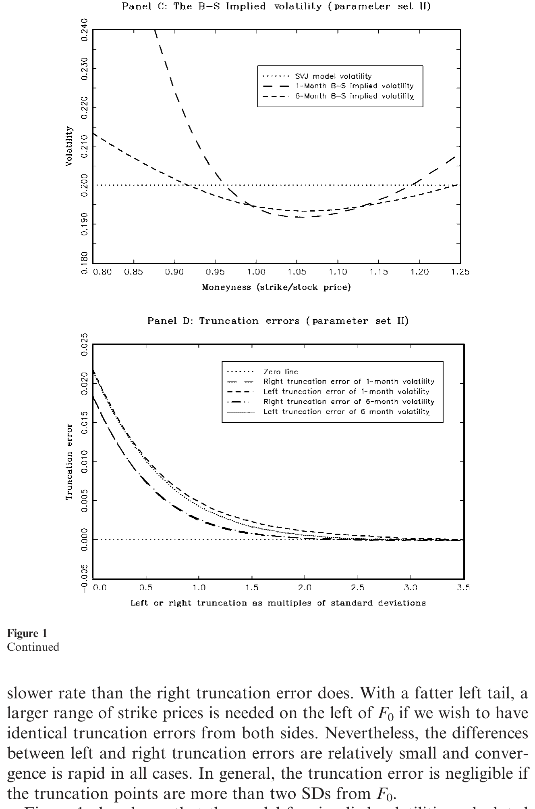
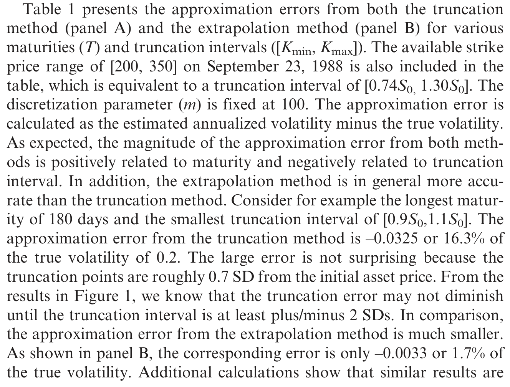
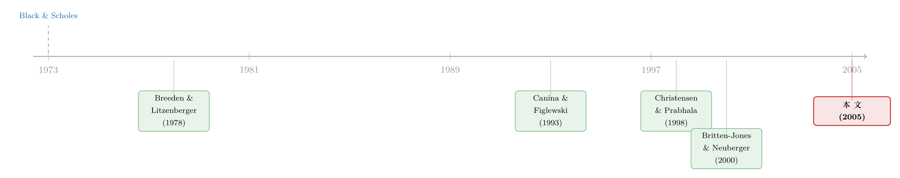

拿掉那把叫「模型」的尺子，期权市场才被公正地审了一次
本文读的是 Jiang & Tian (2005, Review of Financial Studies)：他们把 Britten-Jones 与 Neuberger (2000) 那条「无模型隐含波动率」从扩散推广到带跳跃的过程，给出了一套用真实期权报价就能算出来的实现方法（截断 + 外推），并据此对期权市场做了一次直接的效率检验。结论是——这个无模型度量吞掉了 B–S 隐含波动率和历史波动率里的全部信息，是对未来已实现波动率更有效的预测。被怀疑了二十年的那位「先知」，其实一直没说错话，错的是审问它的方式。
1 一个被怀疑了二十年的「先知」
先说一个几乎所有做衍生品的人都信奉的直觉：期权价格里藏着市场对未来波动的预期。买卖期权的人是在对标的资产未来的「抖动幅度」下注，所以从期权价格里反解出来的 隐含波动率 (implied volatility) ，理应比单纯回看历史的波动率更聪明、更前瞻。
可吊诡的是，最早一批认真去检验这个直觉的实证研究，给出的答案几乎是当头一棒。Canina 和 Figlewski (1993) 用标普 100 指数期权算出的 B–S 隐含波动率去预测随后的已实现波动率，发现两者几乎不相关——隐含波动率不但不比历史波动率更准，甚至看上去根本没把历史信息吸收进去。换句话说，那位被寄予厚望的「先知」，张口就错。
这就尴尬了。要么是期权市场根本无效，定价里压根没有信息；要么……是我们审问它的方式出了问题。
整个九十年代到本世纪初的文献，基本是在这两条路之间反复横跳。Day 和 Lewis (1992)、Lamoureux 和 Lastrapes (1993)、Jorion (1995)、Fleming (1998) 找到了隐含波动率确有预测力的证据，但又一致地发现它是一个有偏的预测；后来 Christensen 和 Prabhala (1998) 这一批人，靠着拉长样本（避开 1987 年崩盘的体制转换）、用 工具变量 (instrumental variables, IV) 纠正变量误差、用不重叠样本绕开「望远镜式重叠」问题，才把天平重新拨回「隐含波动率确实更有信息」这一侧。
但这些研究有一个被绝大多数人忽视的共同软肋。
2 问题出在哪：一个「联合检验」的陷阱
注意，上面这些研究几乎清一色用的是平价附近（at-the-money）期权的 B–S 隐含波动率。这里其实埋着两个问题。
第一个问题比较直白：只盯着平价期权，就等于把所有非平价期权里的信息主动扔掉了。市场对尾部、对偏度的看法，统统写在那些虚值、实值期权的价格里，而你视而不见。
但真正致命的是第二个问题。用 B–S 隐含波动率去检验市场效率，本质上是一个 联合检验 (joint test) ：你同时在检验「期权市场是否有效」和「B–S 模型是否正确」。一旦被拒绝，你根本分不清是市场无效，还是仅仅因为 B–S 模型本身就是错的（我们早就知道它错——否则哪来的波动率「微笑」与「冷笑」）。Canina-Figlewski 那记当头棒喝，很可能打的根本不是市场，而是 B–S 这个模型设定。
于是一个自然的问题浮出来：有没有一种隐含波动率，根本不依赖任何期权定价模型？ 如果有，我们就能把那个联合检验拆开，单独、干净地审一次期权市场。
答案是有的。而把它从理论变成可以拿真实报价去跑的工具，正是本文的贡献。
3 无模型的隐含波动率：从无套利里长出来
Britten-Jones 和 Neuberger (2000) 证明了一件很漂亮的事：在扩散假设下，从当前到未来某一时点的 风险中性积分收益方差 (integrated return variance) ，完全由到期日相同、执行价连续分布的那一整组期权价格决定。这就是他们的命题，本文称之为 Proposition 1。
我们沿用本文的记法：在 远期测度 (forward measure) 下，远期价格 \(F_t\) 是一个鞅；记 \(C^F(T,K)\) 为执行价 \(K\)、到期 \(T\) 的远期看涨期权价格。那么——
这条等式的右端，Britten-Jones 和 Neuberger 称为 无模型隐含方差 (model-free implied variance) ，开方即 无模型隐含波动率 (model-free implied volatility) 。它最迷人的地方在于：右边没有任何「波动率」参数，没有任何模型设定，只有市场上看得见的期权价格。它是纯粹从无套利条件里长出来的。
为什么成立？我把关键三步拆开讲，直觉其实不难。
第一步：鞅 + 二次变差。 在远期测度下 \(F_t\) 是鞅，写成 \(dF_t = F_t\,\sigma_t\,dW_t\)。于是 \((dF_t/F_t)^2 = \sigma_t^2\,dt\)，积分起来恰好就是我们想要的积分方差 \(\int_0^T \sigma_t^2\,dt\)。
第二步：对数合约。 对 \(\ln F_t\) 用伊藤引理，
$$ d\ln F_t \;=\; \frac{dF_t}{F_t} \;-\; \frac12\left(\frac{dF_t}{F_t}\right)^{2}. $$
移项并积分、再取远期测度下的期望。由于 \(F_t\) 是鞅，\(\mathbb{E}_0^F\!\big[\int_0^T dF_t/F_t\big]=0\)，那一项干净地消失，于是
$$ \mathbb{E}_0^{F}\!\left[\int_0^{T}\!\left(\frac{dF_t}{F_t}\right)^{2}\right] \;=\; -\,2\,\mathbb{E}_0^{F}\!\left[\ln\frac{F_T}{F_0}\right]. $$
积分方差，被等价地翻译成了一个「对数合约」的期望价值。
第三步：静态复制。 而 \(-2\,\mathbb{E}_0^F[\ln(F_T/F_0)]\) 这个对数合约，可以用一篮子不同执行价的期权静态复制出来——这正是 Breeden 和 Litzenberger (1978) 那套「期权价格的二阶导给出风险中性密度」的逻辑的直接推论。复制的权重恰好与 \(1/K^2\) 成正比，积分一下，就回到了 Proposition 1 的右端。
那跳跃呢？这是本文相对前人最实在的一处推进。Britten-Jones 和 Neuberger 的推导依赖扩散假设，可现实里资产价格是会跳的，跳跃恰恰是许多金融资产价格动态里最要命的一块。本文在附录里证明：由于任何鞅都能被正交地分解为一个纯连续鞅与一个纯不连续鞅之和（Jacod 和 Shiryaev, 1987；Protter, 1990），Proposition 1 对一般的鞅过程依然成立。换句话说，哪怕标的价格里有跳跃，右边那条期权积分照样精确地等于左边的积分方差。这一步保证了这个度量的普适性。
如果你觉得这条积分公式眼熟——没错，2003 年芝加哥期权交易所改版后的 VIX 指数，骨子里用的就是同一个对所有执行价加权积分的思路。把波动率交易、方差互换、再到「恐慌指数」串起来的，正是这条无模型关系。（关于 VIX 衍生品的定价，可参见《恐慌指数也能定价：当 2008 把所有「均值回归」模型一起按在地上摩擦》；关于「从无套利约束里把分布读出来」这条更一般的线，可参见《把未来的概率从期权价格里「读」出来：一个被忽略的无套利约束》。）
4 把公式落地：截断、离散，和「外推」这关键一步
理论很美，但 Proposition 1 右端是一个对 \(0\) 到 \(\infty\) 全体执行价的积分。现实里，市场只挂出有限个、离散的执行价。要把这条公式真正算出来，得过三道关。
第一关，离散积分。 把积分换成 梯形法则 (trapezoidal rule) 数值求和。本文证明，只要执行价步长够细，离散误差可以忽略：当步长 \(\Delta K \le 0.35\) 个标准差（约对应 \(m\ge 20\) 个节点）时，误差就微不足道——按初始价 \$100、年化波动率 0.2 折算，这相当于一个月期权约 \$2、六个月期权约 \$5 的执行价间隔，跟市场上实际的挂牌间隔基本吻合。
第二关，截断误差。 真正棘手的是：积分要从 \(0\) 到 \(\infty\)，可执行价只在一个有限区间 \([K_{\min},K_{\max}]\) 内可得。直接把尾巴砍掉（truncation），就引入了 截断误差 (truncation error) 。本文的 Proposition 2 给出了左右两侧截断误差的上界。以右侧为例：
$$ 2\int_{K_{\max}}^{+\infty}\frac{C^{F}(T,K)-\max(0,\,F_0-K)}{K^{2}}\,dK \;\le\; \mathbb{E}_0^{F}\!\left[\left(\frac{F_T-K_{\max}}{K_{\max}}\right)^{2}\!;\,F_T>K_{\max}\right]. $$
这个上界很直观——它正比于收益分布尾部的「局部波动」。本文用一个 随机波动加随机跳跃 (stochastic volatility and random jump, SVJ) 模型来量化这件事：
$$ \frac{dF_t}{F_t} = V_t^{1/2}\,dW_t + J_t\,dN_t - \lambda\mu_J\,dt,\qquad dV_t = (\theta_v-\kappa_v V_t)\,dt + \sigma_v V_t^{1/2}\,dW_t^{v},\qquad dW_t\,dW_t^{v} = \rho\,dt, $$
其中 \(N_t\sim\) Poisson\((\lambda)\)，\(\ln(1+J_t)\sim N\!\big(\ln(1+\mu_J)-\tfrac12\sigma_J^2,\;\sigma_J^2\big)\)；当 \(\lambda=0\) 时它退化为 Heston (1993) 模型。本文取两组参数：第一组日收益分布接近对称（偏度 $-0.03$、峰度 \(7.43\)），第二组则严重左偏、肥尾（偏度 $-2.22$、峰度 \(41.87\)），但两组都对应 20% 的年化波动率。结果（如图 1 所示）很干净：截断误差随截断点远离远期价单调下降，一旦截断点超过 \(\pm 2\) 个标准差，误差就可以忽略；分布越左偏，左尾就需要更宽的执行价范围才能把误差压到同一水平。

Figure 1: also shows that the model-free implied volatilities calculated
第三关，也是最关键的一步——外推。 问题在于，现实中可得的执行价范围常常连 \(\pm 2\) 个标准差都覆盖不到。于是本文沿用 Shimko (1993)、Aït-Sahalia 和 Lo (1998) 的做法：先把挂牌期权价格翻译成 B–S 隐含波动率，对这些隐含波动率用 三次样条 (cubic spline) 拟合出一条光滑曲线，在内部插值、在端点之外用端点隐含波动率做水平外推，再把外推出来的隐含波动率翻回期权价格代入积分。
这里有个容易让人误会的地方，必须澄清：这一步用到 B–S 公式，并不等于假设 B–S 模型是对的。B–S 在这里只是一个把「价格 ↔ 隐含波动率」一一对应起来的换算工具，是一座桥，不是一个信仰。整个度量依旧是无模型的。
外推这一步值多少钱？看表 1。考虑最难的情形——180 天到期、可得执行价区间只有 \([0.9S_0,\,1.1S_0]\)（截断点离初始价仅约 0.7 个标准差）：纯截断法的近似误差高达 $-0.0325$，足足是真值 \(0.2\) 的 16.3%；而换成外推法，误差骤降到 $-0.0033$，只剩真值的 1.7%。一个数量级的改善。两种方法的误差都随到期变长而变大、随执行价区间变宽而变小，但外推法在「执行价范围捉襟见肘」时的稳健性，正是它能被搬进真实数据的底气。

Table 1: presents the approximation errors from both the truncation
5 直接检验：期权市场到底有没有效率
有了这把不依赖模型的尺子，本文终于可以做前人想做却做不了的事——对期权市场效率来一次直接检验，而不再是市场效率与 B–S 模型的联合检验。
数据是芝加哥期权交易所 (CBOE) 的标普 500 指数（SPX）期权。沿着近期文献最干净的做法，本文用 tick-by-tick 逐笔数据、常用的数据过滤、不重叠的月度样本，并用高频指数收益估计已实现波动率，把测量误差压到最低。
检验的逻辑是一个 包含回归 (encompassing regression) ：把未来已实现波动率，同时对无模型隐含波动率、B–S 隐含波动率、以及过去的已实现波动率回归，看谁还能贡献增量信息。
两个结论，一正一反：
- 与既有文献一致，B–S 隐含波动率确实比历史波动率含有更多信息，但它本身是对未来波动率的一个无效率（有偏）的预测；
- 而无模型隐含波动率，吞没了 B–S 隐含波动率与过去已实现波动率中的全部信息，是对未来已实现波动率更有效的预测。
把这两句话连起来读，才看见本文真正的劲道所在：历史波动率里的信息，其实早已被正确地写进了期权价格——市场是有效的；之所以前人一次次得出「隐含波动率没用」「隐含波动率有偏」的结论，是因为单只平价期权的 B–S 隐含波动率，既被错误的模型设定污染，又只用了整条期权链里的一个点，不足以把所有相关信息榨出来。换一把不挑模型、且对全体执行价积分的尺子，那位被冤枉了二十年的「先知」，立刻就还了清白。本文报告这一结论对不同估计方法、不同期限、用实际或隐含指数值、以及不同已实现波动率算法都稳健。
6 文献脉络
把这条线捋一捋，会看得更清楚。最上游是 Black 和 Scholes (1973)，给了我们第一把从期权价格反解波动率的尺子；紧接着 Breeden 和 Litzenberger (1978) 指出，期权价格对执行价的二阶导其实就是风险中性密度——这是后来一切「无模型」工作的种子。

然后是漫长的「实证拉锯」：Canina 和 Figlewski (1993) 抛出那记当头棒喝，说隐含波动率几乎毫无预测力；Christensen 和 Prabhala (1998) 等人通过更长样本、工具变量、不重叠样本，把结论拨回「隐含波动率更有信息」。但真正关键的一步，是 Britten-Jones 和 Neuberger (2000)——他们建立在 Breeden-Litzenberger 以及 Derman-Kani、Rubinstein、Ledoit 和 Santa-Clara (1998) 等人关于隐含分布的工作之上，第一次给出了纯由无套利条件决定的无模型隐含方差。本文（Jiang 和 Tian, 2005）站在这条脉络的末端，做了三件事：把它推广到带跳跃的过程、给出可落地的实现方法、并用它把那个困扰文献二十年的联合检验拆开，做了一次干净的期权市场效率检验。
7 评论与延伸（Q&A + 研究方向）
(a) 几个可能的疑问
Q：无模型隐含波动率和 B–S 隐含波动率，到底差在哪？
B–S 隐含波动率是「把一个市场价格倒灌进 B–S 公式、反解出的那个唯一的 σ」，它依赖 B–S 模型成立，且通常只取自一只（平价）期权。无模型隐含波动率则是对整条期权链按 \(1/K^2\) 加权积分得到的，不假设任何定价模型，只用无套利。前者是「一个点 × 一个错模型」，后者是「整条曲线 × 零模型」。
Q：为什么说基于 B–S 隐含波动率的效率检验是「联合检验」？
因为你用 B–S 把价格翻成 σ 时，已经默认 B–S 是对的。一旦回归被拒，你无法区分到底是「市场无效」还是「B–S 模型本身错了」。无模型度量把后一个嫌疑人请出场，于是剩下的拒绝（或不拒绝）才真正指向市场效率本身。
Q：既然现实里只有有限个执行价，那条要外推的尾巴，会不会偷偷把 B–S 假设塞回来？
不会。外推时 B–S 只充当「价格 ↔ 隐含波动率」的一一映射工具，是个换算器而非真模型——拟合的对象是隐含波动率曲线，水平外推的是端点隐含波动率。表 1 显示，外推法在最窄的执行价区间下把误差从真值的 16.3% 压到 1.7%，说明这套近似在实践中是站得住的。
Q：跳跃为什么不破坏 Proposition 1？
直觉是：积分收益方差度量的是「二次变差」，而二次变差对连续部分和跳跃部分都有定义。鞅可以正交分解成纯连续鞅与纯不连续鞅，期权价格作为终端收益的函数，把两部分的变差都吸收了进去。所以哪怕有跳，右端的期权积分依然精确等于左端的总方差。
Q：「吞掉全部信息」是不是太强了？识别上可信吗？
这是一个统计意义上的结论：在包含回归里，加入无模型隐含波动率后，B–S 隐含波动率和历史波动率的系数不再显著。它确实强，但也有边界——它依赖样本期（SPX、月度不重叠样本）、依赖已实现波动率作为「真值」的代理，且 SPX 期权流动性极好、执行价覆盖宽，外推负担轻。换到流动性差、执行价稀疏的市场，结论未必照搬。
Q：这个度量和「方差风险溢价」是什么关系？
无模型隐含方差是风险中性测度下的积分方差期望；它和物理测度下的已实现方差之差，正是 方差风险溢价 (variance risk premium) 。本文聚焦的是「信息含量／预测力」，但同一把尺子换个用法，就是后来一大批方差风险溢价研究的起点。
(b) 几个可能的研究问题与提案
1. 把无模型隐含波动率搬进信用市场。 【经济故事】股票期权有无模型隐含波动率，那 CDS 期权（credit default swaption）或债券期权能不能也构造一个「无模型信用波动率」？若能，它对未来信用利差、违约率的预测力，是否也吞没了结构模型隐含的那一套？这相当于把本文的「联合检验拆解」逻辑搬到信用市场。 【可行性】中。CDX/iTraxx swaption 的执行价覆盖远不如 SPX，截断与外推误差会被放大，需要诚实地评估 Proposition 2 的上界在稀疏执行价下还紧不紧。数据可得但不便宜。
2. 截断/外推误差在流动性枯竭时如何爆发。 【经济故事】本文的近似精度建立在「执行价覆盖足够宽、报价足够密」之上。可一旦市场进入压力期，深度虚值期权的报价先消失——这恰恰是尾部信息最该被读出来的时候。无模型隐含波动率会不会在危机里系统性地低估真实波动？ 【可行性】高。用 SPX 期权在 2008、2020 等若干压力窗口，对比执行价覆盖收缩前后无模型度量的偏差，识别清晰，纯数据驱动，doable。
3. 外资持有人与指数期权的信息效率。 【经济故事】本文证明 SPX 期权市场把历史信息「正确」地定了价。那么在外资参与度差异很大的跨国指数期权市场里，无模型隐含波动率的预测效率，是否随外资持有比例上升而提高？这能给「外资是否提升信息效率」之争提供一个来自衍生品市场的干净证据。（与这一争论相关的跨国证据，可参见《外资真是「蝗虫」吗？——一次跨 30 国的长期投资体检》。） 【可行性】中。需要多国指数期权数据 + 各国市场的外资可投资度，识别上要处理市场发展水平等混淆变量。
4. 用方差风险溢价预测公司债收益。 【经济故事】把无模型隐含方差减去已实现方差得到方差风险溢价，再看它对公司债超额收益（尤其高收益段）的预测力。机制是：方差风险溢价度量的是市场对「波动本身」的恐惧，而信用利差里有一大块正是对这种系统性波动的补偿。 【可行性】高。指数期权 + TRACE 公司债数据均可得，时间序列预测回归 doable；难点在于把方差风险溢价的预测力与已知的信用因子区分开。
我自己的判断：本文的贡献是「方法论 + 一个干净结论」的双响。方法上，它把一个理论上漂亮、实践中却没法算的对象，配上了截断界、离散界和外推法这一整套可操作的工具箱，让无模型隐含波动率从论文走进了数据——后来 VIX 改版、方差互换定价、乃至整条方差风险溢价文献，都受惠于此。结论上，它用「拆开联合检验」这一招，把困扰文献二十年的「隐含波动率没用」之谜，相当一部分归因于模型误设与信息浪费，而非市场无效。
要说担忧，主要在外部效度而非内部逻辑：其一，结论建立在 SPX 这个执行价覆盖极宽、流动性极好的市场上，外推负担轻；换到执行价稀疏、尾部报价不可靠的市场，Proposition 2 的上界会不会还那么友好，是个真问题。其二，「已实现波动率」本身是用高频数据估计的代理，含微观结构噪声（这正是 Aït-Sahalia, Mykland 和 Zhang, 2003 等人关心的事），用一个有噪声的「真值」去给预测打分，需要更仔细的稳健性。其三，"subsumes all information" 是样本内的统计判断，样本外、跨期限的预测稳定性，我更想看到。
接下来最想看的，是把这把尺子拿去压力期和信用市场——前者检验它在最该灵的时候灵不灵，后者检验它的逻辑能走多远。
参考文献
- Black, F., and M. Scholes (1973). The Pricing of Options and Corporate Liabilities. Journal of Political Economy 81(3), 637–659.
- Breeden, D. T., and R. H. Litzenberger (1978). Prices of State-Contingent Claims Implicit in Option Prices. Journal of Business 51(4), 621–651.
- Britten-Jones, M., and A. Neuberger (2000). Option Prices, Implied Price Processes, and Stochastic Volatility. Journal of Finance 55(2), 839–866.
- Canina, L., and S. Figlewski (1993). The Informational Content of Implied Volatility. Review of Financial Studies 6(3), 659–681.
- Christensen, B. J., and N. R. Prabhala (1998). The Relation between Implied and Realized Volatility. Journal of Financial Economics 50(2), 125–150.
- Heston, S. L. (1993). A Closed-Form Solution for Options with Stochastic Volatility with Applications to Bond and Currency Options. Review of Financial Studies 6(2), 327–343.
- Jiang, G. J., and Y. S. Tian (2005). The Model-Free Implied Volatility and Its Information Content. Review of Financial Studies 18(4), 1305–1342.
- Shimko, D. (1993). Bounds of Probability. Risk 6, 33–37.
- Aït-Sahalia, Y., and A. W. Lo (1998). Nonparametric Estimation of State-Price Densities Implicit in Financial Asset Prices. Journal of Finance 53(2), 499–547.